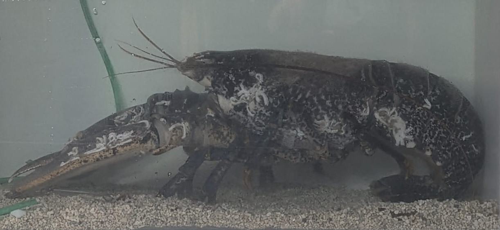

Homard européen
Homarus gammarus
Le homard européen est l'un des plus grands crustacés présents sur les côtes de l'Europe. Reconnaissable à sa couleur bleu foncé et à ses deux grandes pinces, il vit dans les zones rocheuses où il chasse principalement la nuit.
Informations scientifiques
| Nom scientifique | Homarus gammarus |
|---|---|
| Nom commun | Homard européen |
| Famille | Nephropidae |
| Ordre | Decapoda |
| Classe | Malacostraca |
| Habitat | Fonds rocheux entre 20 et 100 mètres. |
| Répartition | Atlantique Nord-Est et Méditerranée. |
| Longueur | 25 à 60 cm. |
| Poids | Jusqu'à 8 kg. |
| Espérance de vie | Plus de 50 ans. |
Description
Le homard européen possède une carapace robuste bleu-noir parsemée de taches
plus claires. Il est doté de deux pinces différentes : une pince broyeuse,
puissante, servant à casser les coquilles, et une pince coupante utilisée pour
découper les proies.
Espèce essentiellement nocturne, il passe la journée caché dans les failles
rocheuses. Son régime alimentaire est composé de mollusques, de crabes,
d'oursins, de poissons morts et de nombreux invertébrés.
La pêche de cette espèce est strictement réglementée afin de préserver les
populations sauvages. Le homard européen est aujourd'hui l'un des crustacés les
plus emblématiques des côtes atlantiques.